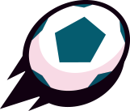

¿Qué es Brawl Stars?
Brawl Stars (también abreviado BS) es un juego móvil multijugador creado por Supercell. El juego se lanzó en 2017 y se lanzó globalmente en 2018. Antes de la beta se llamaba Project Laser. En Brawl Stars, los jugadores se clasifican por su nivel y por sus trofeos totales. Los jugadores coleccionan luchadores (Brawlers) y seleccionan uno para usar en cada partida. Los Brawlers están clasificados según su rareza: especiales, superespeciales, épicos, míticos y legendarios (a excepción de Shelly que es la Brawler inicial). Actualmente hay 79 luchadores en el juego, incluidos uno inicial. Los jugadores obtienen Brawlers con los créditos.
Modos de Juego
Supervivencia

En este evento, hay 10 jugadores sin equipos. El objetivo del juego es derrotar a todos tus oponentes y ser el último Brawler en pie. Puedes obtener Cubos de fuerza al derrotar a los Brawlers enemigos o al abrir Cajas en el mapa. La salud de las Cajas de cubos de fuerza depende del nivel de fuerza promedio de todos los jugadores y tiene una salud máxima de 6500 y una salud mínima de 4500. Los cubos de fuerza aumentan la salud del Brawler en 400 y aumenta su daño de ataque/curación en un 10%. Cuanto más sobrevivas, más trofeos/fichas recibirás. A medida que avanza la partida, un gas venenoso mortal sopla desde los bordes de la arena, lo que obliga a todos los Brawlers a entrar en un área cada vez más pequeña. El gas venenoso inflige 1000 daños por segundo, permanecer en él durante más de 5 segundos aumentará su daño en 300. En algunos mapas hay un Modificador activo que introduce una condición especial adicional a las partidas.
Balón Brawl
Balón Brawl es un modo de juego de Brawl Stars que consiste en que aparte de matarse unos a otros, lo que tienen que hacer es marcar 2 goles en la portería del rival. Si no se han marcado 2 goles del mismo equipo antes de que se acabe el tiempo, ganará el que haya marcado más o en caso de empate habrá un tiempo extra de un minuto.
Atrapa Gemas

Es un modo de juego en el que debes conseguir y mantener durante 15 segundos 10 gemas en tu equipo. Estas aparecerán en el centro del mapa, si mueres pierdes todas las gemas que conseguiste, estarán en el lugar donde moriste donde podrán recogerlas tus aliados o tus enemigos.
Caza Estelar

Es un modo de juego en el que tienes que matar todos los Brawlers del equipo rival ya que al matarlos te darán estrellas y quien posea más estrellas al final gana. Es un 3v3, cada jugador vale dos estrellas al comienzo de la partida, si te matan el equipo contrario obtendrá puntos en función de tu cantidad de estrellas. Cuando matas a alguien vales 1 estrella más (máximo 7), si te matan vuelves a tener dos, en el centro hay una estrella azul que el equipo que la tenga si hay un empate gana.
Atraco

Es un modo de juego bastante simple: solo tienes que proteger tu caja fuerte y romper la del rival. Si se acaba el tiempo el equipo con la caja más dañada pierde.
Buzz